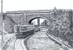
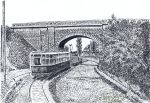

{kind=link}

Строительство храма Николая Чудотворца началось весной 1883 г. Его освящение состоялось 22 октября 1888 г. Трехъярусный крестово-купольный кирпичный храм на каменном основании был сооружен в византийском стиле. В сентябре 1936 г. собор был взорван. История его возрождения началась с воссоздания Свято-Никольского прихода 27 марта 1991 г. С 14 августа 1991 г. совершаются регулярные богослужения. 22 мая 1997 г. совершена первая Божественная Литургия в строящемся соборе. В конце 1999 г. произведено освящение и воздвижение главного купола собора с крестом.
{kind=link}
{kind=link}
Двухэтажное старинное кирпичное здание православной гимназии находится рядом с Никольским собором, на Соборной площади. До 1898 года это училище ютилось в старых, тесных помещениях. На Базарной площади 5 июня 1898 года, было начато строительство нового здания, которое предназначалось для двухклассного слободского училища. Здание строилось по плану архитектора Э.Б. Ходжаева и под его наблюдением, которое он производил безвозмездно. Через год строительство было завершено.
Т-образное кирпичное здание на каменном цоколе построено в стиле эклектики. Планировка здания проста и отвечает его назначению. Главный фасад обращён на юго-запад. Первый этаж имеет узкие прямоугольные проёмы подсобных помещений, а второй этаж - широкие проёмы классных комнат. Центральный резалит с входом завершается треугольным аттиком, в котором указана дата постройки "1898".
С конца XIX века двухклассным слободским училищем заведовал Павел Степанович Кривохотский, учителями были священник Гавриил Николаевич Покровский, Иван Васильевич Панфилов, Мария Александрова и Борис Гаврилович Волжский. Почётным блюстителем училища был Яков Иванович Семёнов. Двухклассное слободское училище существовало до 1908 года. В этом училище обучались дети многих небогатых кисловодчан. В 1910-х годах почётным смотрителем городского училища был Григорий Александрович Милашевский, инспектором - Григорий Андриянович Медведев, а учителями - Ф.И. Кугатов, В.Е. Егоров, В.И. Козлов и др.
В советское время в здании открылась школа N4. Перед Отечественной войной среди её учеников были будущие Герои Советского Союза, заслужившие это почётное звание в кровопролитных боях за Родину, Г.А. Романенко и Г.А. Арустамов. Мемориальные доски с их фамилиями и бюст Г.А. Арустамова (1968г., скульптор Х.Б. Крымшамхалов) украшают главный вход в здание.
Теперь в этих старых стенах помещается православная Свято-Никольская классическая гимназия.
{kind=link}
{kind=link}
Проспект Мира (старое название - Воронцовский подъем) идет от Колоннады на юг в сторону Свято-Никольского собора.
{kind=link}
Памятный знак в честь кисловодчан, казаков 2-го Волгского полка Терского казачьего войска, участников I мировой войны, полных Георгиевских кавалеров открыт 31 июля 2014г. на территории Кисловодского историко-краеведческого музея "Крепость" (пр.Мира, д.11). Находится около крепостной стены.
{kind=link}
{kind=link}
Санаторий ФСБ "Жемчужина Кавказа" (до 1996г. санаторий им. X-летия Октября) открыт в 1924 году. Расположен на территории площадью 4,5 гектара на западной границе Нижнего парка, рядом с Колоннадой - главным входом в парк, в полусотне метров от Центральной Нарзанной Галереи. Главный корпус был первым санаторием в Кисловодске, построенным в советский период, по проекту архитектора Фомина в 1930г.; два десятилетия спустя по проекту архитектора С.Л. Каневского корпус был реконструирован и принял сегодняшний облик. Санаторий имеет три корпуса, соединенных галереей. Вместимость: 220 мест.
{kind=link}
{kind=link}
Колоннада построена по проекту архитектора Н.Н. Семёнова в 1912г. в 100-летие победы в Отечественной войне с Наполеоном.
{kind=link}
Скульптор М.И. Ласточкин, архитектор П.П.Еськов. Открыт 3 ноября 1957г.
{kind=link}
Ресторан "Чайка" находился под Казачьей горкой (в центре Кисловодска) до 70-х годов
{kind=link}
Нарзанная галерея построена по проекту архитектора С.И. Уптона в виде ключа (если посмотреть на здание сверху). Строилась она с 1848 по 1858 годы. В северной части здания на первом этаже находились ванны для приёма процедур. На втором этаже располагались гостинечные номера. А в южной части (которая изображена на рисунке) находится колодец нарзана. Первоначально нарзан подавали из кранов отдыхающим девушки, сотрудницы галереи. В 1960-1970-х годах нарзан каптировали и колодец накрыли стеклянным колпаком, который можно увидеть и сейчас.
{kind=link}
В 1894г. с западной стороны колодца Нарзана был устроен отдельный бювет для простого народа, куда минеральная вода поступала по трубам. В 1901г. бювет "Народный" был расширен, помещение его облицовано тёсаным кисловодским камнем, а пол выложен метлахскими плитками. Для спуска к нему сделаны были ступени из тёсанного камня. Бювет с тремя никелированными кранами имел в длину 2 сажени, в ширину 1 сажень и был обнесён с двух сторон проволочной решёткой. В 1920-х годах "Народный бювет" был перестроен и расширен по проекту архитектора П.Еськова в стиле конструктивизма и ныне находится на прежнем месте. Колодец нарзана до 1925г. был единственным источником в Кисловодске.

Фонтан с двумя чашами и четырьмя лягушками, выпускающими струи воды, был установлен на Курортном бульваре в 1895г. После реставрации открыт в 2017г. Оформление бортов и парапетов сделано из доломита. Чаша сохранена в первозданном виде. Бронзовое декоративное оборудование восстановлено в соответствии с оригиналом. Бронзовые и чугунные отливки делали на заводе в Санкт-Петербурге.
{kind=link}
В 1896 году образовался завод РОЗЛИВ, и часть нарзанной галереи называлась розливная. Нарзан доставляли первоначально конной тягой, т.е. на подводах, запряженных лошадьми. В 1903 году конная тяга была заменена электрическим трамваем. Маршрут трамвая проходил от нарзанной галереи, следовал через Тополевую аллею (ныне Курортный бульвар), выходил на ул. Шоссейную (ныне ул. Кирова), окончание маршрута - базсклад, который находился на товарной станции. Трамвай просуществовал до 1966 года и был заменён автомобилями. Со времени Великой Отечественной войны и до закрытия трамвайной линии бессменным машинистом был Михаил Савченко.
{kind=link}
Магазины были построены в начале 1910-х годов предположительно по проекту архитектора Э.Б. Ходжаева.
Одноэтажное приземистое кирпичное здание на низком цоколе построено в стиле модернизированного классицизма. Сооружение имеет сложную, многочастную планировку применительно к рельефу и границам участка. Основными фасадами являются западный и северный, высокий северо-западный угол здания срезан. Западный фасад имеет в центре просторную арку для вьезда во двор. Арка завершается сложным аттиком с треугольным фронтоном. По сторонам от арки расположено по три больших прямоугольных витрины с узкими входами. Эти элементы зрительно делят фасады на ряд примерно равных частей, каждая из которых занимает отдельное торговое помещение (отсюда и название - "Торговые ряды"). Северный фасад из-за перепада высот оформлен ступенчато, каждое торговое помещение на своём уровне.
Помещения Торговых рядов сдавались в аренду или продавались под различные заведения, которые занимались продажей разнообразных товаров или обслуживанием клиентов (парикмахерские, мелкие мастерские и прочее).
Сейчас это также сеть магазинов.
{kind=link}
Построена в 1881 году, по проекту старшего архитектора В.И.Грозмани. Зипалов построил на участке два дома - длинный и короткий, в которых находились 36 номеров.
{kind=link}
Бальнеолечебница Октябрьские ванны находится по адресу Курортный бульвар, 8 (в 20 метрах от Нарзанной галереи, 350м от Колоннады, 550м от ж/д вокзала).
Возведены по проекту архитектора П.П.Еськова на месте, где до того стоял дом Е. Понятовской (в нем внаем сдавались меблированные комнаты). Открыты 1 мая 1928г.
Жёлтое здание строгих форм в стиле конструктивизма с крупной надписью "Октябрьские ванны" на фасаде и с торца. Крыша главного корпуса сделана в виде небольшого купола; корпус имеет кубическую форму, его венчает меньший куб - часовая башня с квадратным циферблатом. Позднее по обе стороны входа были укреплены горельефы, их автор - К.Л.Луцкий.
Нарзанные Октябрьские ванны действуют. В главном корпусе расположены кабинки, где курортники принимают нарзанные процедуры, комнаты отдыха и большой резервуар для хранения нарзана объёмом 400 м3.
{kind=link}
Здание построено в 1903 году по проекту А.Н. Клепинина. Художник М. Врубель украсил фасады здания цветными панно из майолики с изображением павлинов.

{kind=link}
Находится на Курортном Бульваре. Открыт в 1997г., сооружён по проекту скульптора Академика А. Бичукова.
{kind=link}
Крест был установлен в 1998г. по решению Администрации Кисловодска.
{kind=link}
{kind=link}
 

{kind=link}
Завод основан в 1894 г., когда в Нарзанной галерее было выделено помещение для розлива целебной минеральной воды. В 1938 г. завод был переведён в новое помещение по ул. Кирова, 1.
{kind=link}
Находится на пересечении улиц Кирова и Желябова. Построен по проекту архитектора П.П. Еськова в 1960г.
{kind=link}
{kind=link}
{kind=link}
{kind=link}
В центре ул. Желябова (дом 17) находится одно из наиболее оригинальных и интересных зданий Кисловодска - так называемый "Дом с башней" или дача Путята, похожая на фантазийный замок с маяком.
Застройка новой улицы - Российской (с апреля 1914 г. - Столыпинская; с 1920-х - Желябова) началась на рубеже веков. В 1910 г. пустой земельный участок на этой улице был приобретен инженером путей сообщения Юлианом Матвеевичем Верженским, который служил на Владикавказской железной дороге с декабря 1892г. Весной 1910 г. он был назначен начальником кисловодской пассажирской станции, а прежде руководил станцией в г. Грозный.
Около 1911 г. здесь был построен оригинальный особняк по проекту, предположительно, Э.Б. Ходжаева. Здание сделано в виде изящного замка с башней, похожей на морской маяк. Двухэтажный кирпичный дом с высокой башней и оригинальными фигурными проемами соответствует стилю модерн. Сооружение имеет Г-образный план. Основное двухэтажное строение на каменном цоколе с высокой четырехскатной крышей имеет симметричный главный фасад со своеобразными по форме фигурными оконными проемами и наличниками. Широкая тяга делит фасад на этажи. Центральный ризалит служит входным порталом с зубчатым аттиком и с балконом на верхнем этаже. Угол здания оформлен в виде круглой двухъярусной зубчатой башни с круглыми и высокими узкими окнами оригинальных форм, характерных для модерна. Позади к зданию примыкает четырехъярусная восьмигранная башня, похожая на маяк, с узкими стрельчатыми окнами, которая имеет круговой обзорный балкон и завершается конической красной крышей со шпилем. Черепица для крыши была изготовлена на заводе Штейнгеля и Грозмани во Владикавказе.
Вскоре после смерти мужа многодетная вдова Верженского продала участок со строением Валентине Путята. Известно, что Путята - дворянский род, происходящий из Польши, где писался Puciata, и вступивший в русское подданство в 1655г. Новая домовладелица сдавала помещения приезжим посетителям курорта.
После революции дача В.В. Путята была национализирована. Здесь в 1920-х годах был устроен санаторий N18 Цустраха. Дом сильно пострадал в 1990-х годах, будучи пустым и заброшенным. С 2003 г. ведется его реставрация и надстройка третьего этажа.
{kind=link}
Улица Ходжаева пересекает проспект Ленина вблизи его начала у ул. Желябова. До недавнего времени ул. Ходжаева называлась ул. Урицкого, а раньше - Померанцевская.
{kind=link}
Пр. Ленина (старые названия - ул. Георгиевская, Колюбакинская) - улица протяженностью около полутора километров, начинается от ул. Желябова, поворачивает налево, пересекает пр. Дзержинского и поднимается к курортному парку.
{kind=link}
В 1902г. в Кисловодске строит дом для себя и своей семьи известный архитектор Э.Б. Ходжаев. Вскоре он переселяется на постоянное жительство в Кисловодск. В 1910г. он построил для своей семьи дачу "Лизушка", назвал её в честь своей дочери Елизаветы. Находится она в курортной зоне по ул. Урицкого (бывшей Померанцевской), 10.
{kind=link}
Здание построено в 1877г. В 1921г. было национализировано у некого Абазова и долгое время в нём находился лечебный корпус санатория им. Г.Димитрова. В годы Великой Отечественной Войны в здании размещался эвакогоспиталь N2042. С торца здания располагалось почтовое отделение N32. В конце 90-х годов XX века произошла реконструкция, и здание было передано Городскому Народному Суду, который находится в нём и сегодня.
{kind=link}
Её построил в 1905г.(по проекту архитектора Э.Б. Ходжаева), Антон Иванович Твалчрелидзе (1858-1930), бывший в то время инспектором народных училищ в Ставропольской губернии.
Он, уроженец Грузии, имеретинец, был известенна Ставрополье как человек, немало сделавший для этого степного края.
А.И. Твалчрелидзе был женат на Прасковье Тимофеевне Астаховой, дочери терского казака Тимофея Астахова (1834 - 1918), личности тоже незаурядной. С шестнадцати лет Тимофей начал службу в армии, в семнадцатилетнем возрасте сопровождал великого князя Михаила Николаевича в его поездке по Кавказу, участвовал в штурме Гуниба и пленении Шамиля. Ему пришлось сопровождать будущего императора Александра II в поездке по Германии, быть участником освобождения Болгарии с армией генерала Скобелева. При штурме Плевны он был тяжело ранен и ему ампутировали руку. Закончил он службу полковником императорского конвоя.
Участок земли в Кисловодске, на котором решил строить дачу Антон Твалчрелидзе, принадлежал Тимофею Астахову. Антон Иванович с женой и двумя сыновьями поселился здесь в 1907г., после того, как вышел в отставку в чине действительного статского советника, получившего потомственное дворянство.
В 1915г. А.И. Твалчрелидзе уступил за баснословную цену свою Кисловодскую дачу Н.В. Лежневу, хозяину Еланского конного завода (что в Саратовской губернии). Коннозаводчик Мухтаров приобрёл её для больной жены, старшей дочери известного Московского мануфактурного промышленника и владельца Трёхгорной мануфактуры Н.И. Прохорова, которой врачи рекомендовали лечение в Кисловодске.
Продав дачу, А.И. Твалчрелидзе с женой перебрался в своё имение Цихис Дзири близ Батуми, приобретённое раньше. Здесь он стал выращивать чай и цитрусовые, принимал участие в создании Батумского ботанического сада. И вновь, как и в других делах, добился в этих своих начинаниях больших успехов.
В советское время дача была национализирована, значительную часть времени здесь размещался один из корпусов санатория для шахтёров. Впоследствии в даче располагался корпус санатория им. С.М.Кирова.
В конце 1990-х годов это здание требовавшее капитального ремонта, приобрёл и реставрировал известный предприниматель В.А. Брынцалов. Высококвалифицированные реставрационные работы проведены по проекту кисловодского архитектора А.Р. Арустамяна.
{kind=link}
Здание находится на пересечении просп. Дзержинского и просп. Ленина, построено в 1900г. по заказу лесопромышленника Очакова. В 1914г. в здании располагался кабинет врача Горелова, который лечил вредные привычки методом гипноза. В настоящее время в здании на первом этаже с восточной стороны размещаются обувной магазин, магазин "Триумф", с южной стороны - ресторан "Русский двор".
{kind=link}
видны купола Храма Великомученника и Целителя Пантелеймона (пр. Ленина, 3а), воссоздаваемого на месте разрушенного в 60-е годы.
{kind=link}
16-этажное здание, построено в 1984г. по проекту архитектора О.Кузнецова.

{kind=link}
Ул. Герцена начинается немного ниже памятника Дзержинскому, на подъеме и повороте от ЖД вокзала. Первоначально улица носила название Красная.
С правой стороны виден фрагмент дачи Табачного фабриканта Кундури.
{kind=link}
В настоящее время здание реконструировано, в нем находится гостиница "Германия" (10 номеров).
{kind=link}
Вид с просп. Ленина на санаторий Орджоникидзе и пансионат Орлиное гнездо.

Построена в 1900-х годах по заказу домовладелицы Л.И. Офросимовой по проекту архитектора Э.Б. Ходжаева. В настоящее время - корпус Детского санатория Смена.
{kind=link}
Дом построен в начале XX века, предположительно по проекту гражданского инженера Владимира Николаевича Семёнова. В настоящее время в доме располагается администрация Кисловодского Центрального военного санатория.
Доктор Карл Карлович Барт, сын крупного пятигорского врача, имел обширную врачебную практику в Кисловодске; с 1909г. заведовал медицинской частью Софийского детского приюта, который занимал дачу Хомяковых на западном склоне Крестовой горы; исполнял эту должность до 1918г., когда приют был закрыт; также выполнял обязанности врача в местных мужской и женской гимназиях. Около 1908г. К.К.Барт приобрел участок в Ребровой балке, на углу Ребровской (ныне - пр. Дзержинского) и Андреевской улиц и вскоре построил собственный дом своеобразной архитектуры. На собственной даче доктор Барт вскоре открыл лечебницу для внутренних и женских болезней с родильным отделением. В советское время особняк был национализирован и превращен в корпус санатория, который был образован на базе нескольких бывших дач Ребровой балки осенью 1922г.
{kind=link}
Почти на углу ул. Б. Хмельницкого и просп. Ленина находится большое школьное здание. В начале XX века в нем находилась женская прогимназия. Тогда эта местность была пустынной. Здесь начали строиться по преимуществу частные дачи. Обживалась Ребровая балка.
Осенью 1901 г. кисловодчанка Анастасия Фёдоровна Васильева открыла первое частное женское трёхклассное училище (заведение 2-го разряда). Это училище первоначально помещалось на новой даче семьи Васильевых "Светлана". При училище был открыт пансион для приезжих учениц. Первыми преподавателями училища были родные А.Ф.Васильевой. Законоучителем был Фёдор Николаевич Васильев, другим предметам учили Клавдия Фёдоровна и Нина Фёдоровна Васильевы; французский язык преподавала Ида Фёдоровна Готье (возможно, урождённая Васильева). Обучение учениц производилось за ежегодную плату. Делами учебного заведения управлял попечительский совет и начальница училища А.Ф.Васильева. Летом 1905 г. они обратились к попечителю Кавказского округа за разрешением преобразовать трёхклассное училище в женскую прогимназию, т.е. четырёхклассное училище с сокращённой программой гимназии. Разрешение было дано 30 октября 1905г., а 25 ноября состоялось собрание попечительского совета новой прогимназии. Было решено установить годичную плату за преподавание новых предметов, в том числе французского и немецкого языков, а также пения, в размере 60р. с каждой ученицы. Новый 4-й класс женской прогимназии был открыт осенью 1906 г., о чём было объявлено предварительно.
В это время было построено новое просторное здание прогимназии на Пушкинской ул. (ныне ул. Богдана Хмельницкого), рядом с Пантелеймоновским храмом. Четырёхэтажное здание на каменном цоколе создано в строгом утилитарном "кирпичном" стиле с элементами неоклассики. Здание имеет форму параллелепипеда, с четырёхскатной железной крышей.
В 1910 г. плата за обучение в женской гимназии до 5 класса составляла 60 р.; в 6 классе - 70 р.; до 8 класса - 100 р. В 1911г. было учреждено Общество Вспомоществования нуждающимся учащимся мужской и женской гимназий Кисловодска, которое помогало оплачивать обучение способных, но бедных учеников и учениц.
Сейчас это здание принадлежит школе N1, но закрыто, находится в аварийном состоянии, а школьники учатся в пристроенном к нему доме.
{kind=link}
Почти в середине северной части Ребровой балки находится приметное здание, которое до советского времени носило название -Дача "Тихий уголок" Колодяжной. Владелицей этой дачи была супруга известного на Кавказских Минеральных Водах кондитера Петра Фёдоровича Колодяжного (ок.1855 - ок.1914).
Колодяжные - достаточно распространённая фамилия на юге Российской империи. Эту фамилию носили терские и кубанские казаки, а так же зажиточные крестьяне Ставропольской и Харьковской губерний. По ряду признаков, кондитер Пётр Колодяжный был выходцем из крестьян Харьковской губернии, которые после Освобождения 1861г. отправились на поиски лучшей доли. В конце XIX века судьба привела способного пекаря в Кисловодск. В начале 1890-х годов он открыл на богатом курорте собственное дело - Кондитерскую, где дети, барышни и прочие "сладкоежки" могли "откушать вкусных булочек и кренделей с горячим шоколадом, кофеем, чаем и прохладительными напитками". Первоначально, конкурентов у него в Кисловодске было мало и дело процветало, принося хороший и стабильный доход. К сожалению, я не располагаю изображением Кисловодской кофейни Петра Колодяжного, деревянный павильон которой находился южнее Нарзанной галереи. Столики кофейни в хорошую погоду выставлялись рядом, на открытом воздухе. А собственный дом он имел в районе, между нынешними улицами Чкалова и Шаумяна. Около 1903г. П.Ф. Колодяжный открыл новую Кофейню в Железноводске, возле новой Железной (Пушкинской) галереи. Судя по всему, проект здания этой кофейни составил Пятигорский архитектор С.И. Гущин, т.к. Железноводская кофейня Колодяжного довольно похожа на Пятигорскую Кофейню Гукасова. Одновременно, его брат (или сын) Елисей Колодяжный арендовал Бильярдную в Железноводском парке.
Дела шли хорошо и около 1905г. в Ребровой балке П.Ф. Колодяжный приобрёл участок, где построил доходную дачу, для сдачи в наём приезжим посетителям курорта, которую назвал в рекламных целях "Тихий уголок". Это было двухэтажное кирпичное здание, на полуподвальном этаже, с мансардой под оригинальной и сложной крышей.
Всеми делами этой дачи занималась его жена.
Окончательный удар по Кисловодскому предприятию Колодяжного нанесло в 1914г. открытие по соседству капитального здания Кофейни Московского богача Р.Д. Вострякова (ныне известно как Колоннада). Судя по всему, этот год стал последним в жизни П.Ф. Колодяжного. Закрываются его заведения в Кисловодске и Железноводске, его фамилия исчезает из списка местных торговцев. Теперь доход семьи Колодяжных приносит только дача "Тихий уголок".
После погромов и ужасов Гражданской войны, дача Колодяжной была национализирована и вскоре стала корпусом советского санатория "Красный шахтёр".Ныне она принадлежит пансионату "Экспресс" Горьковской железной дороги.
{kind=link}
Здание построено в начале XX века предположительно по проекту архитектора Э.Б. Ходжаева по частному заказу. Сведений о заказчике нет. Не известно также, в связи с каким событием здание обрело название " Тургеневка".
В 1921г. здание было национализировано декретом В.И. Ленина от 13.05.21 "О домах отдыха" и июньским постановлением СНК на право национализации гостиниц, дач, пансионатов, принадлежавших частным лицам. С 1923 г. здание попадает в ведомство Наркомздрава, который организовал в корпусе санаторий для обслуживания партийного и советского актива. В период нового санаторного строительства 1935-1936гг. было закончено по проекту Мержанова строительство Дома отдыха ЦИК СССР Главного корпуса. "Дача Тургеневка" в этот период действовала в качестве спального корпуса Дома отдыха ЦИК СССР, т.к. была выгодно расположена в центре парка, в наиболее благоприятной микроклиматической зоне. В дальнейшем Дом отдыха ЦИК ССССР был переименован в санаторий 4-го Управления Министерства здравоохранения СССР "Красные камни". С 90-х годов XX столетия санаторий "Красные камни", в перечень объектов недвижимости которого входит здание дачи "Тургеневка" 1911 г.(литер А4) имеет статус Федерального государственного учреждения Медицинского центра Управления делами Президента Российской Федерации.
Трехэтажное, асимметричное в плане здание "Дача Тургеневка" возведено на рельефном участке Ребровой балки в начале XX века. Территория санатория "Красные камни", в центре которой расположено здание "Дача Тургеневка", представляет собой значительный участок неправильной формы непосредственно примыкающий к Среднему парку, вход в который оформлен каскадной лестницей. Северным фасадом с главным входом здание обращено к улице Герцена. Отличительной чертой участка застройки ул. Герцена является относительная планировочная изоляция от основных структурных направлений и центров, высокая плотность памятников и композиционных единств. Здание отстоит от красной линии ул. Герцена в глубине участка и расположено на территории с выездом на ул. Герцена, ограждено.
{kind=link}
{kind=link}
Санаторий "Красные камни" состоит из главного корпуса и двух дач: дача N1 и дача N2. Санаторий основан в 1934г. на базе построенной в 1902г. Казённой гостиницы как дом отдыха и санаторий "Сосновая роща". С 1935 по 1938 г. велись строительные работы, на левом западном склоне Ребровой балки, нового комплекса по проекту архитектора М.И. Мержанова. В строительстве применялся артикский туф и местный песчаник. После приёмки работ был открыт в январе 1939г. Санаторий построен в дворцовом стиле, а сверху он выглядит как самолёт, летящий на юг. В здании санатория был организован дом отдыха ЦИК и Совета народных комиссаров СССР. Продолжают использоваться и дореволюционные строения бывших престижных дач. Уже в предвоенные годы санаторий стал "Номенклатурным", предназначенным для отдыха партийно-правительственной элиты. В годы Великой Отечественной Войны, до оккупации и после неё действовали госпитали N3211-2435, 5393 и 5413. С 25 мая 1947 г. санаторий стал называться "Красные камни", в том же году был подведён нарзанопровод, создана развитая инфраструктура. В 1960 - 1970 годах здесь любили бывать А.Н. Косыгин и Л.И. Брежнев, Н.К. Байбаков и Ю.В. Андропов, по красным скалам прогуливался Б.Н. Ельцин. В разные годы здесь бывали космонавты, писатели, поэты, государственные деятели центрального и регионального уровней. В 2002г. к особо важным персонам добавился президент В.В. Путин.
{kind=link}
Бывшая дача "Карс", построена в 1900-е годы Московским купцом А. Тарасовым, отцом писателя А. Труайя ( Л.А. Тарасова). По проекту архитектора Э.Б. Ходжаева и названа в честь Турецкой крепости, взятой русскими войсками в 1878 году. В настоящее время дача принадлежит санаторию "Красные камни".
{kind=link}
{kind=link}
Дача построена в 1902г. по заказу Пятигорского купца М. Ушакова в подарок своей жене Елизавете Ксавельевне, которая была попечительницей Реальных училищ Пятигорска. Автором проекта был архитектор Э.Б. Ходжаев.
Ф.И. Шаляпин был в Кисловодске пять раз, и в 1917г. останавливался на даче тогдашнего владельца М.Ушакова. Впоследствии дача была продана генералу Обрезову, а когда в городе начали открываться санатории, произошла национализация. В этом здании в разное время находились рабочая столовая санатория им. Н.А.Семашко, склад. С 1989г. в отреставрированном особняке открыт Литературный музей "Дача Ф.И. Шаляпина", который существует и сегодня.
{kind=link}
На доме прикреплена мемориальная доска: "В этом доме с 1911 по 1927 год жил и работал выдающийся деятель Отечественной медицины Академик Михаил Владимирович Яновский". До конца 1990-х - начала 2000-х годов в доме располагался Детский сад. Впоследствии дом был выкуплен частным лицом и сейчас это частная собственность.

Здание построено в 1910-е годы по заказу Кисловодского и Ессентукского нотариуса А.Л. Войцеховского.
В 1933 г. в здании открылся пансионат "Горн", находился в ведении Украинского Курортного Управления. Занимал несколько бывших исторических строений, функционировал круглый год - летом на 225, зимой - 210 коек. В конце 30-х годов пансионат был реорганизован в санаторий N1 Укркурупра на 180 мест, для сердечно-сосудистых и нервных больных.
Сейчас в здании находится управление ФСБ.
{kind=link}
{kind=link}
"Дом раввина" - обьект культурного наследия (памятник истории и культуры). Здание расположено в центре Кисловодска, на подьёме улицы Куйбышева (бывш. Кирпичной), недалеко от Октябрьской площади.
Памятник архитектуры местного значения, бывший жилой дом раввина, построен в начале XX века. Обьект представляет архитектурный стиль "Модерн". Это двухэтажное каменное здание оригинально в архитектурном отношении: ассиметрично скомпонованное, украшено верандой террасой, каменной наружной лестницей с балюстрадой, ведущей на второй этаж, оконными и дверными проёмами разной формы. Кровлю венчает купол со шпилем, в виде иудейской шапочки "Кипи". С соседним зданием, где раньше была синагога, особняк соединён деревянным остеклённым переходом. Сохранилась металлическая ограда с каменными столбами. Фундаменты каменные, стены кирпичные, облицованы камнем, перекрытия деревянные, кровля железная.
До закрытия синагоги в 1938г. в здании проживал раввин. После закрытия синагоги в здании размещался пункт переливания крови, затем общежитие медицинского училища, потом - контора строительной организации. С 1993г. здание находится на балансе ВООПИК "Возрождение".


На месте огромного здания бывшей Кисловодской горбольницы некогда находились здания первой в Кисловодске благотворительной лечебницы - Хлудовской больницы с амбулаторией и хирургическим отделением. Эта больница дала название Хлудовской улице (ныне - ул. Чкалова).
{kind=link}
{kind=link}
Построен по собственному проекту и оборудован к 1903г.
В августе 1908г. в богатый дом Ходжаева ворвались два экспроприатора из революционной организации "Чёрный ворон" и стали требовать деньги. Ходжаев отказался выполнять их требование. Его телохранитель попытался задержать грабителей, но был застрелен. Полиция поймала убийцу. С этого времени зодчий стал носить с собой браунинг.
В конце октября 1909г. особняк Ходжаева был ограблен, однако через несколько дней неизвестные воры анонимно вернули большую часть похищенного - одеяла, подушки, шубу, тужурку, самовар, осеннее пальто и даже пистолет. Мотивы подобного поведения грабителей остались неизвестны.
В 1910г. Ходжаев перебрался с семьёй в новопостроенную дачу "Лизушка" на Померанцевской улице (ныне Урицкого), а свой особняк полностью сдал Петербургскому практическому врачу Марии Дмитриевне Проскуряковой. Во время лечебного сезона Проскуряковы открыли здесь частный пансион-санаторий близ Новых Нарзанных ванн и Гидропатического заведения. В холодные месяцы 1911-1917гг. часть особняка Ходжаева арендовалась городской управой под помещение начальной городской школы.
В 1923г. особняк Ходжаева на Хлудовской ул. был национализирован и использовался с различными целями. В настоящее время (с 1983г.) в этом красивом особняке расположена городская детская художественная школа им. Н.А. Ярошенко. Сейчас в школе обучаются 250 учащихся
{kind=link}
{kind=link}
Жилой дом, построен в 1955г.
{kind=link}
Жилой дом, построен в 1957г.

В Кисловодске есть памятник конструктору Фридриху Цандеру, который был установлен благодаря С.П. Королёву.
Ф.А. Цандер и С.П. Королёв работали над изучением реактивного движения. Руководителем группы, работающей над этим проектом, был Цандер.
Фридрих Цандер приехал на курорт г. Кисловодска в 1933г. по путёвке, которую ему достал Королёв. Но по пути Цандер заразился страшной болезнью, которая свирепствовала в те годы - сыпным тифом, и спасти его не смогли. Знаменитого конструктора Фридриха Цандера похоронили на Кисловодском кладбище.
Королёв, считавший всю жизнь Цандера своим наставником, не смог приехать на похороны; спустя время он приехал в город, чтобы посетить могилу своего учителя, но не нашёл ее. По его просьбе организовали группу людей, которые занялись поиском могилы.
Спустя несколько лет Цандер был перезахоронен и на его могиле был установлен памятник, в который С.П. Королёв вложил часть своих средств; авторы проекта: художник В.П. Дюмин, скульптор А.А. Мануйлов. Открытие состоялось 11 августа 1959г..
{kind=link}
Расположен на Воинском кладбище по проезду Цандера. Сооружён в 1949г.
{kind=link}
Уже в первые дни Великой Отечественной войны Кисловодск был превращен в крупную госпитальную базу страны. На базе санаториев, пансионатов и гостиниц было развернуто 39 эвакуационных госпиталей. 8 августа 1941г. в Кисловодск пришел первый эшелон с ранеными. За время войны кисловодскими медиками возвращено в строй около 600 тысяч раненых и больных солдат и офицеров. С 14 августа 1942г. по 9 января 1943г. Кисловодск был оккупирован фашистами. Спустя 3 месяца после освобождения разрушенный и разграбленный город вновь принимал раненых.
Умерших от ранений фронтовиков хоронили на городском кладбище. До августа 1942 г. на братских кладбищах было похоронено более 2500 солдат и офицеров Красной Армии. К сожалению, имена многих из них неизвестны, так как надгробия были уничтожены фашистами во время оккупации. Фронтовики, умершие от ран в госпиталях Кисловодска за период 43-46гг. (после освобождения Кисловодска и даже после окончания войны), похоронены в отдельных могилах на воинском кладбище. Имена 1237 фронтовиков известны ( 12 неизвестных).
{kind=link}
Открыт 9 мая 1970г. в Честь 25-летия со дня Победы над фашистской Германией. Авторы проекта - скульпторы братья Л.Е. и М.Е. Роберманы, Н. Санжиев, архитекторы И. Фриденталь, Ю. Хоменко.
Весь северный косогор кладбища разбит на прямоугольные газоны. На углу каждого газона установлена гранитная плита, около каждой плиты растет акация. Западная часть мемориала - воинское кладбище (захоронения 1943-1946 гг.), над которым возвышается скульптура воина-автоматчика
{kind=link}
С левой стороны вдоль стены памятники Пограничникам, Чернобыльцам, Морякам.
{kind=link}
Памятник установлен ко дню Ветерана Боевых действий в 2010г. Некоммерческим партнёрством "Общее дело".

С 1961-62 гг. входящий в КХПК цех N4 начинает производить фарфоровые кружки, кувшины, вазы и мелкую пластику. В 1967 г. он преобразуется в Кисловодскую фабрику сувениров. В 1975г. на КФС появляется первое фарфоровое изделие, декорированное ручной лепкой. Лепка и сегодня остается "визитной карточкой" предприятия. Но не единственной.
{kind=link}
Дом построен в 1956г. предприятием Водо-Свет для сотрудников (в то время в Кисловодске водоканал был соединён с Электросетью).
{kind=link}
Главная - одна из первых старинных улиц станицы Кисловодской.
{kind=link}
рынок Минутка образовался в конце 50-х годов XX в. Сейчас по выходным проходят продовольственные ярмарки.
{kind=link}
Станция Минутка - предпоследняя остановка электричек Минводы-Кисловодск.
{kind=link}
{kind=link}
Построенный в 1907г. в Кисловодской станице Успенский храм через несколько лет стал тесен для всё возрастающего числа прихожан. Это заставило старообрядцев возвести вторую церковь, невдалеке от Успенского храма. Эта небольшая церковь из самана возведена на каменном фундаменте. В 1911г.она была освящена в честь Святой Троицы. Когда в 30-х годах началась кампания по закрытию церквей и их сносу, Успенский храм был снесён. Небольшая Троицкая церковь уцелела, но была отобрана у верующих и осквернена. В середине 40-х годов в политике власти произошёл поворот: появилась возможность регистрировать религиозные общины и открывать храмы. Возвращённый храм освятили в честь Успения Пресвятыя Богородицы.
{kind=link}
{kind=link}
Гора Кабан – вершина Джинальского хребта, 1281м над уровнем моря, на северо-востоке от Кисловодска. С вершины открывается вид на Кисловодск и Ессентуки, на горы Эльбрус, Бештау, Машук, Юцу.
{kind=link}
Построен к Олимпиаде 1980г. С 2011г. включен в ФГБУ "ЮЖНЫЙ ФЕДЕРАЛЬНЫЙ ЦЕНТР СПОРТИВНОЙ ПОДГОТОВКИ", ФИЛИАЛ В ГОРОДЕ КИСЛОВОДСКЕ. В состав филиала ФГБУ "Юг Спорт" входят Нижний и Верхний спортивные комплексы и подвесная пассажирская канатная дорога протяженностью 1730м. Верхний спортивный комплекс расположен в районе горы Малое Седло (Джинальский хребет) в пятидесяти метрах от верхней станции канатной дороги на высоте 1240м. В его состав входят: стадион с футбольным полем и легкоатлетическими дорожками; открытые игровые площадки; гостиничный комплекс; административный корпус; реабилитационно-восстановительный центр; многофункциональный спортивно-тренировочный комплекс; кроссовые трассы с опилко-гравийным покрытием протяженностью от 900 до 1200 м.
{kind=link}
Установлена летом 2021г.
{kind=link}
{kind=link}
В отрогах Пастбищного хребта много пещер и гротов самой различной величины и формы. Это Боргустанская пещерная стена. Длина её около полу километра. Большинство пещер засыпано или недоступно. Самые исследованные и доступные для посещения три: Монахова, Бабушкины окна и Новая.
{kind=link}
В 1943г. были взорваны фашистами.
Рисунок сделан по мотивам фотографии, находящейся в Историко-Краеведческом Музее "Крепость" (автор фотографии неизвестен).
{kind=link}
Находится в пойме реки Подкумок во въездном районе. Открыт в 2020г.
{kind=link}
{kind=link}
{kind=link}
Проспект Победы - главная улица Кисловодска, длина более 4км, от въезда в город на севере до его центра.
{kind=link}
Первоначально - здание горкома КПСС.

Построен в 1970г., снесен в августе 2022г. (на его месте планируется построить многофункциональный культурный центр).
{kind=link}
{kind=link}
В начале XX века на участке нового посёлка вблизи Кисловодска, западнее железнодорожной платформы "Минутка", некто Михайлов построил просторную дачу, которую гордо назвал "Прогресс". Рядом летом 1903 г. был открыт Кисловодский ипподром. Автором проекта этой дачи предположительно, был архитектор Э.Б. Ходжаев. На усадьбе также имелся ряд жилых флигелей и хозяйственных построек.
С марта 1913г., усадьбу Михайлова стало арендовать акцизное ведомство для своего санатория. Он был открыт "в ознаменование завершившегося 1 января 1913 г. 50-летия со дня упразднения в России откупов и введения акцизной системы по взиманию налогов с питей" на выделенные по указу императора Николая II 50 тысяч рублей, а также на сумму, которую собрали по подписке чиновники Главного Управления неокладных сборов и казённой продажи питей и 59 губернских и областных акцизных управлений России. В этом санатории, состоящем из 53 жилых комнат, чиновники этих управлений и члены их семей, нуждающиеся в лечении и отдыхе, могли получить временное жильё и стол за весьма умеренную плату. В мае 1913г. был создан Попечительный комитет санатория, председателем которого стал Управляющий акцизными сборами Терской и Дагестанской областей А.Корозо, а членами - А.И.Левицкий, Л.С.Ивановский, К.Карафа-Корбут. Летом 1914г. началась Первая мировая война. Осенью в Акцизном санатории собирались устроить лазарет для раненых воинов, но здание не было приспособлено для зимнего периода, и это решение было отклонено. Затем Попечительский комитет решил предоставить на тёплое время 1915г. главный корпус санатория, где имелось 47 комнат, для приюта пострадавшим на войне воинам, которые нуждались в лечении на Кисловодском курорте. Оставшиеся 15 комнат были сохранены для чиновников. Известно, что 26 июня 1915г. военное отделение санатория посетила 60-летняя М.Г. Савина, которая лечилась в Ессентуках. Тяжелобольная прославленная актриса ободряла больных офицеров, читая им патриотические стихи и отрывки из драматических произведений. Спустя два месяца она скоропостижно скончалась в Петербурге. Санаторий существовал до осени 1917г. В 1918-1919гг. на бывшей даче "Прогресс" Михайлова жила семья казачьего генерала А.Г. Шкуро - супруга Татьяна Сергеевна (1893-1933) и дети. В годы Гражданской войны здесь находился госпиталь. В 1925 г. в зданиях бывшего санатория открылся советский санаторий на 125 коек. В 1950-х годах он числился как санаторий ВЦСПС N14 "Минутка" кардиологического профиля. Позднее здесь была устроена инфекционная больница. Ныне корпуса зданий снесены и возведён новый комплекс базы Приэльбрусского спасательного отряда МЧС.
{kind=link}
Вид с северной стороны, с трассы (обычно фотографы фотографируют её с южной стороны).
Гора Кольцо в Кисловодске - сквозное отверстие в скале, возникшее в процессе размыва осадочных пород Мелового периода. Смена климатических условий, приливы и отливы древнего моря оставили разные слои - песчанники, известняки, меловые и мергели. Разнослойный хребет имеет и разовые по твёрдости отложения. Наиболее твёрдые скопления осадочных пород называют желваки. При речных размывах третичного периода желваки подмывались и выпадали из более мягких слоёв, что привело к появлению многочисленных гротов. Один из них вода и ветер просверлили насквозь, что и дало повод людям называть песчаный мыс со сквозным отверстием гора Кольцо.
Гора Кольцо упоминается М.Ю. Лермонтовым, любившего эти места, в романе "Герой нашего времени".
{kind=link}
Сафонов колодец находился в Кисловодске до 1950-х годов. Нарисован по рассказам старожилов, так как фотографий колодца не сохранилось. Построен он генералом Сафоновым между Воронцовской дорогой и станицей Кисловодской. За что станичники были ему очень благодарны. Сейчас на этом месте находится асфальтный завод.
{kind=link}
Сафонов Илья Иванович (1825 - 1896), казачий генерал родом из станицы Ищерской. Начав службу рядовым в 1845г., участвовал во многих военных кампаниях на Кавказе. Дослужился до звания генерал-лейтенанта казачьих войск, командующего Терской казачьей бригадой. Награждён многими орденами, имел монаршую благодарность. При его участии, материальной поддержке в Кисловодске был построен вокзал железной дороги. Умер в августе 1896г. На его похоронах присутствовали А.П. Чехов, А.И. Чупров. Похоронен он был в ограде Собора св. Николая Чудотворца.
Сыном И.И. Сафонова был Василий Ильич Сафонов, дирежер, пианист, директор Московской консерватории.
{kind=link}
Находится по ул. Прудной на речке Ольховка.

Над Николаевским источником на реке Ольховка возведена Надкладезная часовня в честь иконы Пресвятой Богородицы "Живоносный источник". Часовня была заложена в 2004г. Над источником расположен образ Николая Чудотворца, в честь которого и названо данное место. В летний зной туристы могут умыться здесь студеной водой, однако путеводители не рекомендуют употреблять воду из источника для питья.
{kind=link}
Исток Ольховки - в Карачаево-Черкесии, в 17 км от Кисловодска. Ольховка протекает через Нижний парк и вскоре впадает в Березовку.
{kind=link}
Первый мост имел простую конструкцию. Длиной шесть с половиной метров, однопролетный, одним краем лежащий на стене правого, восточного берега Ольховки, а к западному краю была приделана лестница. Он был выкрашен в белый цвет и имел резную балюстраду. Автором первого проекта, вероятно, был главный, на тот момент, архитектор Вод Яков Григорьевич Лукашев, который занимал эту должность с 1891г.
За всё время своего существования мост около пяти раз менял свой внешний вид из-за наводнений и ветхости отдельных частей конструкции. Спустя несколько лет после первоначальной постройки была заменена лестница, а затем и резная балюстрада. В 1920-е годы деревянный мостик был построен заново в очень упрощенном виде. Так он просуществовал до Великой Отечественной войны. После её окончания, примерно в 1950г., был сооружен капитальный одноарочный мост с металлической конструкцией и бетонной лестницей, однако уже в 1960 году он был снова перестроен. Были сделаны новые каменные устои и ажурные ограды. Именно тогда появился небольшой грот со скамьёй. Из-за наводнений мост периодически разрушался. Последняя перестройка моста произведена в 2016г.
Рядом с мостиком находятся Зеркальный пруд с павильоном "Стеклянная струя", лестница "450 ступеней".
{kind=link}
Был возведён в 1999г., по проекту заслуженного художника России, члена международной ассоциации изобразительных искусств ЮНЕСКО, почётным гражданином г. Кисловодска Гургеном Вараздатовичем Курегяном (1943 - 2002).
{kind=link}
24 ноября 2012г. на территории курортного парка Кисловодска произошло открытие смотровой площадки на возвышении над Долиной Роз. Строительство и обустройство обьекта заняло несколько месяцев. Архитектор обьекта - Виктория Горбатенко. По её замыслу на месте традиционной площадки возвышавшейся над Долиной Роз, где обычно все отдыхающие и горожане любят фотографировать и саму Долину Роз и себя на фоне этой достопримечательности, поднялась белая незамысловатая арка с балюстрадой, со стороны напоминающая или дверь или высокое окно. От неё в сторону выхода из парка со стороны санатория Орджоникидзе были поставлены ступеньки, обрамлённые массивными вазами для цветов. Всё так же в белом цвете. Ступеньки же ведут в сооружение с колоннами.
{kind=link}
15-метровая каменная скульптура крокодила была возведена в послевоенные годы. Автор - Николай Данилович Кудинов, рабочий Курортзеленстроя.
{kind=link}
Бассейн находится возле Долины роз. Построен в 1974 году. С конца 80-х годов не функционирует и постепенно разрушается.
{kind=link}
Туевая аллея поднимается от мостика, расположенного за Долиной роз, до Косыгинской тропы.
Вдали виден вагончик канатной дороги. Канатка Кисловодского курортного парка открыта в 1973г.; нижняя станция находится у павильона "Храм воздуха", а верхняя на плато Джинальского хребта рядом с Олимпийским комплексом; протяженность маршрута 1743м; время в пути приблизительно 6-7 минут.
{kind=link}
Красные грибы - группа скал причудливой формы высотой до 7м южнее Долины роз.
{kind=link}
Санаторий "Эльбрус" построен в 1954г. по проекту архитектора А.М.Алхазова. Первоначально назывался "Горный воздух". Является памятником архитектуры.
По архитектурным формам и решениям санаторий представляет собой уникальное здание дворцового типа, размещённое на высоте 800м над уровнем моря. Здание гармонично смотрится на фоне живописной природы.
{kind=link}
Строительство церкви началось в 2009г., лес был привезён из Удмурдии. Иконы писал художник Сергей Горячев, купол расписывает Василий Кузнецов, резьбу в церкви делают Кисловодские мастера краснодеревщики.

Санаторий "Заря" Управления делами Президента РФ расположен в юго-восточной части Кисловодского парка на высоте 1000м над уровнем моря. Открыт 25 марта 1986 г. как санаторий им. XXVII партсъезда. В 3-х, соединенных между собой корпусах, размещены все службы и номера. В 7-этажном здании спального корпуса 214 номеров для более 340 отдыхающих.
{kind=link}
Построена в 2006г. Архитекторы Аслан Урусбиев и Назим Мурадов.
{kind=link}
{kind=link}
{kind=link}
Ущелье реки Берёзовой, или Берёзовая Балка, считается одним из самых живописных ущелий Северного Кавказа. Начинается оно на Бермамытском плато Скалистого хребта и заканчивается в Кисловодске. Протяжённость каньона 17-18 км, скальные стены поднимаются на высоту до 100 м над дном ущелья, по которому бежит река Берёзовая.

{kind=link}
Старое озеро находится на юго-западе Кисловодска. В 1953г. решили, что городу нужно озеро. Развернулась народная стройка. На субботниках и воскресниках был сооружен искусственный водоём, плотина, оборудованы пляж, лодочная станция, проведено озеленение берегов. На берегу был построен ресторан "Родопи" и разбит Комсомольский парк. Площадь озера 12 гектаров.
В 90-е годы озеро пришло в запустение. В 2002г. тогдашний собственник озера - Федерация независимых профсоюзов России - осушил водоем: содержать его и поддерживать в надлежащем санитарном состоянии у профсоюзов не было возможности. Муниципальная власть предложила руководству ООО "Кисловодсккурорт" передать озеро управлению жилищно-коммунального хозяйства при администрации города. В 2006г. город взял Старое озеро на свой баланс, но найти средства на восстановление зоны отдыха не смог. Дно бывшего озера заросло кустарником. Очистка дна началась в основном на средства из федерального бюджета. В 2013г. озеро было заполнено водой и торжественно открыто, но вода была очень грязная; и через нарушенную гидроизоляцию чаши водоема в подвалы домов, расположенных ниже дамбы, стала поступать вода; через год озеро было спущено. Осенью 2016г. его снова ненадолго заполняли. В 2020г. вновь приступили к реконструкции Старого озера. По проекту, на озере обустроят пляж для купания; вокруг озера планируется создать различные зоны для отдыха, спорта, творчества, релаксации.
{kind=link}
В советское время там находился санаторий "Велинград" на 1000 мест. Он являлся крупнейшим курортным комплексом на Северном Кавказе.
{kind=link}
Находится за Старым озером на развилке дорог в поселок и к Замку коварства и любви. Освящён 5 мая 2000г.


Ресторанный комплекс "Замок коварства и любви" находится в живописном, привлекательном в природно-ландшафтном отношении ущелье р. Аликоновки, на расстоянии 5 км к юго-западу от центра Кисловодска, в границах городской черты.
{kind=link}
{kind=link}
{kind=link}
{kind=link}
{kind=link}
{kind=link}
{kind=link}
{kind=link}
{kind=link}
{kind=link}